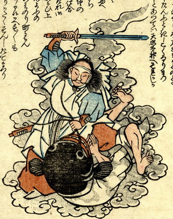

鯰が鹿島大明神に押さえつけられている。鯰は仰向けになって、両手をあわせ許しを乞うている。鹿島大明神は、鯰の両ひげをつかみ、腹に跨って剣を振り上げている。
出典：親書誌：U426_nichibunken_0160：（地震小咄；ジシンコバナシ）／日付：2010／資源識別子：U426_nichibunken_0160_0003_0000
Copyright (c)2010- International Research Center for Japanese Studies, Kyoto, Japan. All rights reserved.